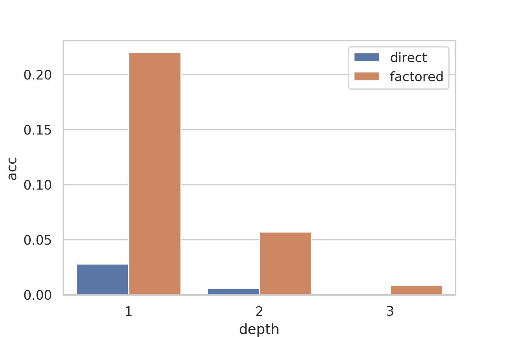
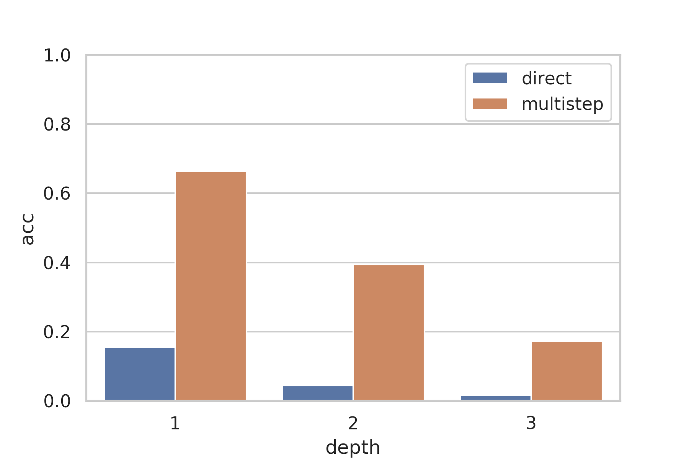

We perform a series of experiments using GPT-3 with decomposition to perform complex toy tasks that it is otherwise unable to solve. The goal of these experiments is to provide some preliminary evidence for the viability of factored cognition in real world models.
For our synthetic task, we chose a series of various arithmetic tasks. Aside from the ease of generating examples, another advantage of arithmetic related task settings is GPT-3's inability to perform even simple mathematical operations. While there is evidence to suggest that this may be due to the peculiarities of the BPE encoding, these fixes are very narrowly domain specific to mathematics and not generalizable to the kinds of tasks we would like general aligned AI systems to be able to perform. Instead, we show that by decomposing the task, we can achieve a major improvement on this task. Intuitively, just as most humans are unable to perform complex, multi-step calculations without pen and paper, it is also reasonable to expect that language models would struggle with directly computing the answers to these problems, especially given the fixed amount of computation that Transformers are able to harness in one step.
Nested Expression Evaluation {#nestedeval}
((9 * 2 + 7) * 1 - 1) = ((18 + 7) * 1 - 1) = (25 * 1 - 1) = (25 - 1) = 24 (9 + (1 - 3) * 7) * 6 = (9 + -2 * 7) * 6 = (9 + -14) * 6 = -5 * 6 = -30 (2 + (5 - 1) * 8) * 9 = (2 + 4 * 8) * 9 = (2 + 32) * 9 = 34 * 9 = 306 2 * (4 - 1 * (2 - 4)) = 2 * (4 - 1 * -2) = 2 * (4 - -2) = 2 * 6 = 12 (6 * (5 * 2 - 3) - 9) = (6 * (10 - 3) - 9) = (6 * 7 - 9) = (42 - 9) = 33
We explore decomposing a task into a series of steps, without any branching. The main advantages of using nested expressions are that they are easy to generate and automatically evaluate, and they give naturally to stepwise decomposition, as the expression must be evaluated from the inside out.
To generate the arithmetic expression, we recursively generate a number
of nested operations, alternating between multiplication and
addition/subtraction, such that to evaluate the expression at least
depth operations must be carried out in series in the correct order.
In terms of difficulty, the depth $= 1$ task corresponds roughly to
the \"One-digit composite (1DC)\" task in the GPT3 paper, though it is slightly
more difficult because the order of multiplication and addition are not
guaranteed to be the same.
We consider three different settings for this experiment:
multistep
: The model is given fewshot prompts in which each step
of the evaluation is provided. The model is given only the problem
and asked to generate as many intermediate steps as it would like,
truncated at a limit of 256 tokens. The value after the last = is
taken to be the model's answer.
direct
: The model is given fewshot prompts in which only the problem and solution are provided. Only one value is generated from the model.
direct_padded
: To control for the fact that the direct setting
is significantly longer than the multistep setting and thus requires
more forward passes during which more computation could
theoretically take place, we also consider the setting where we add
space tokens before the = to pad it to the same length as in the
multistep setting
In each experiment, we do few-shot with $k = 10$.
For the multistep setting, in addition to accuracy, we also compute the following metrics, which are not applicable to either direct setting, to provide additional insight into the failure modes:
Malformed
: This metric indicates the proportion of model responses that are malformed. A model response is considered malformed if it does not contain the correct number of intermediate steps, or if any of the intermediate steps fails to parse; very often, this is due to unbalanced brackets. A malformed response indicates a catastrophic failure.
Mistakes
: This metric indicates the proportion of steps that are incorrect. We observed that often, a single mistake will be made in one step, and that error will be propagated to the final answer despite only one mistake being made. We included this metric to distinguish between models which make many errors to arrive at incorrect answers and models which only make few errors. Malformed responses are not considered for the mistakes metric.


| Depth | Accuracy | Mistakes | Malformed | ||
|---|---|---|---|---|---|
multistep |
direct |
direct_padded |
|||
| 1 | 66.35 | 15.40 | 13.90 | 33.78 | 4.50 |
| 2 | 39.45 | 4.40 | 2.75 | 59.28 | 25.75 |
| 3 | 17.20 | 1.60 | 1.45 | 79.61 | 46.25 |
The direct_padded setting consistently performs significantly worse than the direct setting, and so we do not analyze it in detail.
As a sanity check, our depth=1 direct accuracy is 5.9 percentage points lower than the 1DC accuracy of 21.3 in the GPT-3 paper. This difference is explained by the use of k=100 for multishot in the GPT-3 paper versus k=10 in this paper, and the minor differences in the task.
As depth increases, the number of mistakes made increases. One major problem with factored cognition is that every step must be performed correctly for the final answer to be valid, and the increase in mistakes as problem complexity increases suggests that each individual step has become too complex for the model to handle.
Despite starting out almost negligible, the number of malformed outputs also increases. These failures are predominantly due to formatting problems like unbalanced brackets, due to the increased layers of nesting in the higher depth settings. In addition to the complexity of the step being too large, one other explanation is that the few-shot prompt was insufficient in specifying the task to the model.
Branched Nested Function Evaluation {#nestedbranchedeval}
Today we will be looking at evaluating functions. f(x) = 1 * (x + -3) + 1 * (x + -2) g(x) = 2 * f(x + 1) + 5 * f(x + -3) h(x) = 5 * g(x + 2) + 2 * g(x + 2) To calculate the value of g(5), we first need to calculate f(5 + -2) and f(5 + 2), and since 5 + -2 = 3 and 5 + 2 = 7, they are equal to f(3) and f(7), respectively. To calculate the value of h(-9), we first need to calculate g(-9 + -3) and g(-9 + 1), and since -9 + -3 = -12 and -9 + 1 = -8, they are equal to g(-12) and g(-8), respectively. To calculate the value of g(4), we first need to calculate f(4 + -2) and f(4 + 2), and since 4 + -2 = 2 and 4 + 2 = 6, they are equal to f(2) and f(6), respectively. To calculate the value of h(-1), we first need to calculate g(-1 + -3) and g(-1 + 1), and since -1 + -3 = -4 and -1 + 1 = 0, they are equal to g(-4) and g(0), respectively. To calculate the value of g(-3), we first need to calculate f(-3 + -2) and f(-3 + 2), and since -3 + -2 = -5 and -3 + 2 = -1, they are equal to f(-5) and f(-1), respectively.
Today we will be looking at evaluating functions. f(x) = 4 * (x + -1) + 4 * (x + 2) g(x) = 5 * f(x + 2) + 2 * f(x + -1) h(x) = 1 * g(x + 3) + 2 * g(x + -3) Given that f(5) = 5 and f(2) = 20, we can compute that g(3) = 5 * f(3 + 2) + 2 * f(3 + -1) = 5 * f(5) + 2 * f(2) = 5 * 44 + 2 * 20 = 220 + 40 = 260 Given that f(-5) = -5 and f(-8) = -60, we can compute that g(-7) = 5 * f(-7 + 2) + 2 * f(-7 + -1) = 5 * f(-5) + 2 * f(-8) = 5 * -36 + 2 * -60 = -180 + -120 = -300 We can compute that f(9) = 4 * (9 + -1) + 4 * (9 + 2) = 4 * 8 + 4 * 11 = 35 + 38 = 76 Given that g(4) = 36 and g(-2) = -20, we can compute that h(1) = 1 * g(1 + 3) + 2 * g(1 + -3) = 1 * g(4) + 2 * g(-2) = 1 * 316 + 2 * -20 = 316 + -40 = 276 We can compute that f(6) = 4 * (6 + -1) + 4 * (6 + 2) = 4 * 5 + 4 * 8 = 23 + 26 = 52
To explore a setting with a very high amount of branching, we explore a setting where a series of functions are defined, each in terms of multiple copies of the last. This task increases exponentially in complexity whereas the non-branched task increased linearly in complexity. We use GPT-3 to perform both the decomposition (which entails making further queries given a function to evaluate) and combination (given a query and computed function values, compute the result to the query).
There are two types of steps: decomposition and recombination. To evaluate a function, first, a decomposition step is used to obtain the dependencies of the expression, if any, and then this information is combined in the recombination step. On decomposition steps, the model is given a function call and asked to return a list of function calls that must first be computed before the original call can be evaluated. On recombination steps, the values computed in the corresponding decomposition step are provided in the context along with the function to evaluate, and the model is asked to evaluate the original function.
To improve the accuracy, whenever a multistep calculation is needed, the Nested Expression Evaluation technique is used as well.
| Depth | Accuracy | |
|---|---|---|
factored
| direct
| |
| 1 | 22.0 | 2.8 |
| 2 | 5.7 | 0.6 |
| 3 | 0.9 | 0.0 |
The factored accuracy on the branching case is lower than on the nested case, and decays far quicker. While on nested depth 2 is more than half the accuracy of depth 1, on branched depth 2 is less than a third the accuracy of depth 1. Overall, this shows that the factoring approach also works for tasks with large amounts of branching.
Open Ended Math Problem Evaluation
Since the previous experiments focused on very simple mathematical tasks, we also conducted an experiment using significantly more difficult math problems from MathQA.
The MathQA dataset, which is derived in part from the AQuARAT dataset, contains math word problems and rationales in three different formats. One is directly taken from AQuARAT and is freeform text written by a human---however, the text is extremely noisy and oftentimes inconsistent, incomplete, or inaccurate. The other two are unique to MathQA and consist of cleaner, systematized versions of the solution explanations to the problems expressed in terms of functions. In particular, one is the typical $f(x)$ notation with the function on the left and thus composition written from right to left; as this poses a problem for left-to-right autoregressive models, MathQA also includes an alternate version of the explanations such that it is written left-to-right entirely in the order that the functions are evaluated. MathQA does however still inherit some of the noisiness of AQuARAT, such as strange formatting. We run experiments for each of these three types of rationales.
| Fewshot $k$ | Steps | Accuracy |
|---|---|---|
| 0 | 1 | 21.81 |
| 5 | 1 | 20.77 |
| 5 | 2 | 22.48 |
Since MathQA is a multiple choice task with 5 possible choices, the random baseline score is 20%.
We found that GPT-3 is not able to solve problems from this dataset either with or without rationales in few-shot examples. We speculate that this dataset is hard for GPT-3 because of the noisiness of the task and because there are still large conceptual leaps required to come up with the necessary computations from the word problem that are not included in the rationales.
In MathQA problems, the individual steps are more difficult, often requiring not only arithmetic but application of relations like $d = vt$, and those steps are often only implicit in the rationales. This means that even if the language model imitates the demonstrated rationales, nontrivial computations must still happen within a single feedforward pass, which transformers are known to struggle with. MathQA problems are also more difficult than the other tasks we tested in that the procedures to solve them are not constrained to a single algorithm.